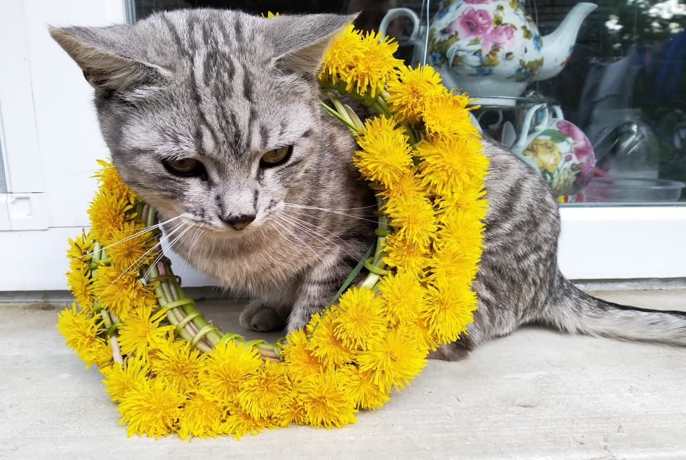
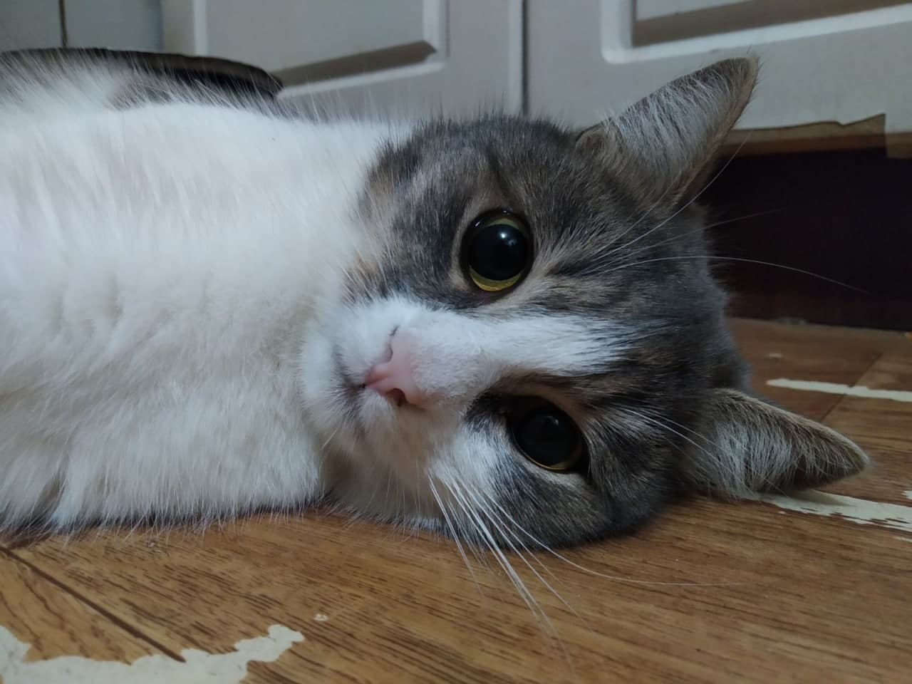

Привіт :)
Мене звати Віка, і все, що мені потрібно для щастя — це музика в навушниках і кіт на колінцях
Обожнюю дощ і туман, катання на лижах, верхову їзду, стрільбу з лука, настільні та комп'ютерні ігри, вивчати міфологію та психологію, а ще складати списки на всі випадки життя.
Тому ось список котів, які у мене коли-небуть були:
- Марс
- Лунатик (був найменшим серед своїх братів, але тримав у страху весь район і спав на плиті біля запалених комфорок)
- Рижик
- Сенсей
- Кіріто, Асуна і Сакура (яких ми з сестрою знайшли в пакеті біля річки)
- Сенсей молодший
- Саймон
- Чешир
- Веснушка
- Барсик (в результаті виявився Барсеткой)
Це Чешир

А це Барсетка

Список речей, які я не переношу:
- павуки
- жара
- буряк
- нав'язливі люди
- фотографувати та фотографуватись
- вставати раніше 10 ранку
- сходи в гуртожитку
сторінка в інстаграм, де майже нічого немає